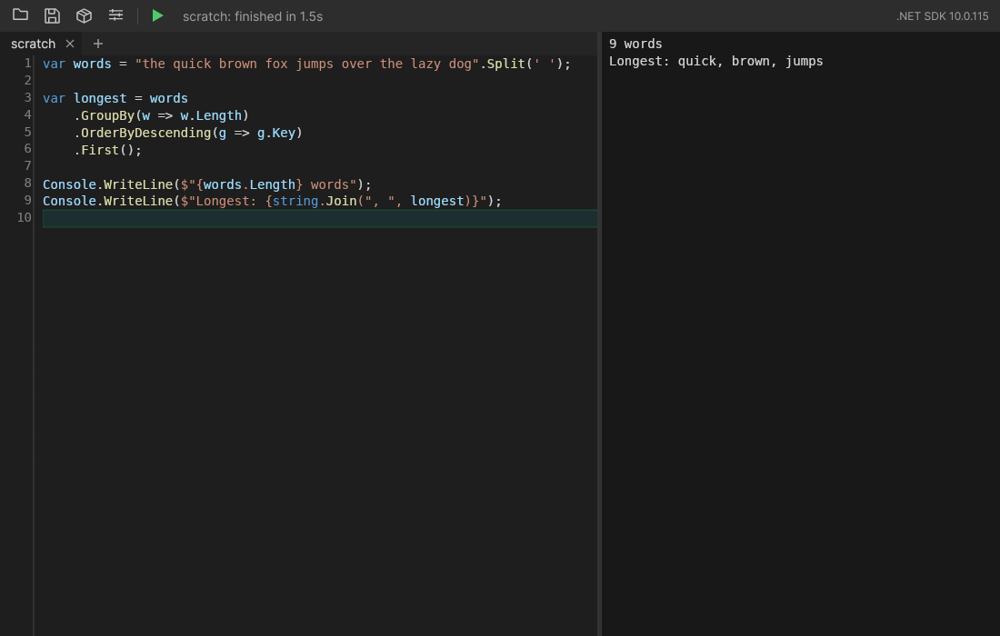
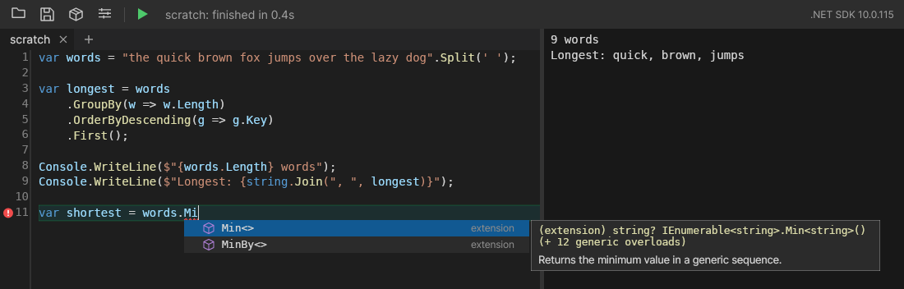
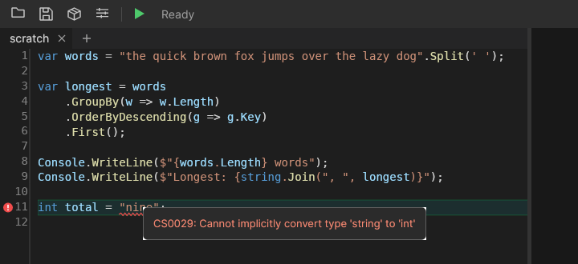
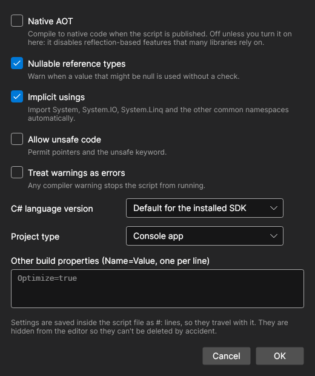

Write C#. Press Ctrl+Enter
RunCS is a desktop scratchpad for C#. Type some code, run it, and read the output beside it. There is no project to create and nothing to set up.

An editor that understands the code, and gets out of the way
Completions from the real compiler
RunCS uses Roslyn, the C# compiler's own analysis engine. Start a word or type a dot and it lists what fits, with each entry's signature and documentation alongside.
Open a parenthesis to see a method's overloads, or rest the mouse on a name to see its type.

Errors appear where you made them
A mistake gets a red underline and a badge beside its line number as you type. Click either to read the message.
The output pane is kept for what your program prints.

NuGet packages in one line
Search nuget.org from inside RunCS and double-click a result. It adds a single #:package line to the top of your script, and completions for the package follow once it has downloaded.
You can also add your own GitHub Packages feed, or paste a link to a .nupkg file.
#:package Humanizer@2.14.1 using Humanizer; Console.WriteLine("three_word_name".Humanize()); Console.WriteLine(TimeSpan.FromMinutes(90).Humanize());
Settings that travel with the script
Nullable checks, unsafe code, the language version, Native AOT, console or web: each script has its own build settings.
They are saved inside the .cs file, so the script behaves the same wherever it goes. RunCS keeps those lines out of the editor, so you can't delete them by accident.

Plain files, plain .NET
Every tab is an ordinary .cs file, and RunCS runs it with dotnet run. A script you write here also runs from a terminal, and a script from anywhere else opens here.
Scripts run with your own permissions. There is no sandbox, so treat code you didn't write the way you would in any terminal.
# the same file, without RunCS
dotnet run scratch.cs
Keys
| Ctrl Enter or F5 | Run the current tab |
|---|---|
| Shift F5 | Stop a running script |
| Ctrl Space | Show completions |
| Ctrl T | New tab |
| Ctrl W | Close tab |
| Ctrl Tab | Next tab |
| Ctrl O | Open a script |
| Ctrl S | Save the script |
| Ctrl P | Packages |
| Ctrl , | Script settings |
Get it
- Install the .NET 10 SDK first. RunCS uses it to build and run your scripts.
- Download the build for your system from the releases page: Windows, Linux or macOS.
- Unpack it and start RunCS. Your first tab is ready to type in.